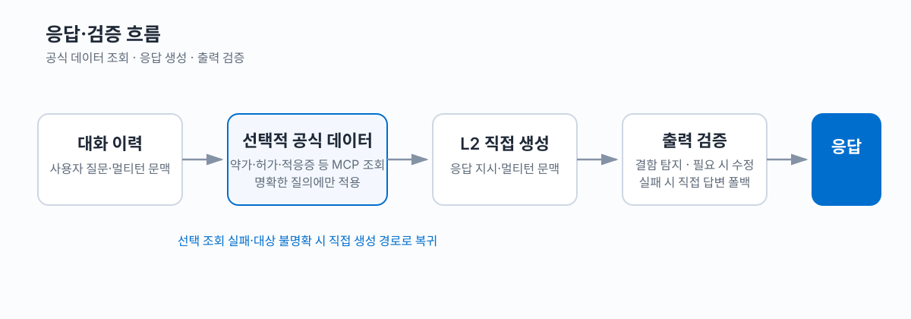
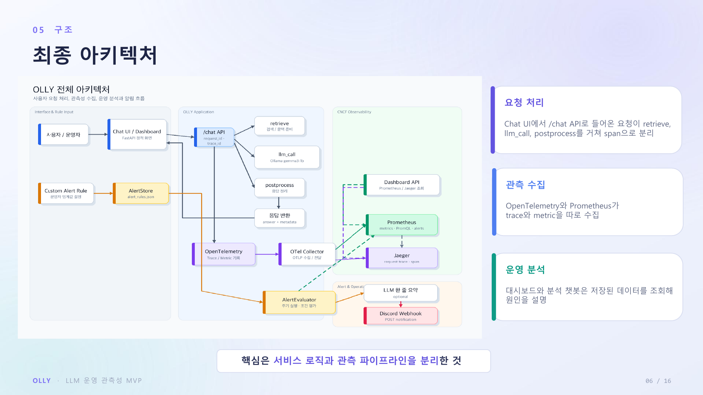
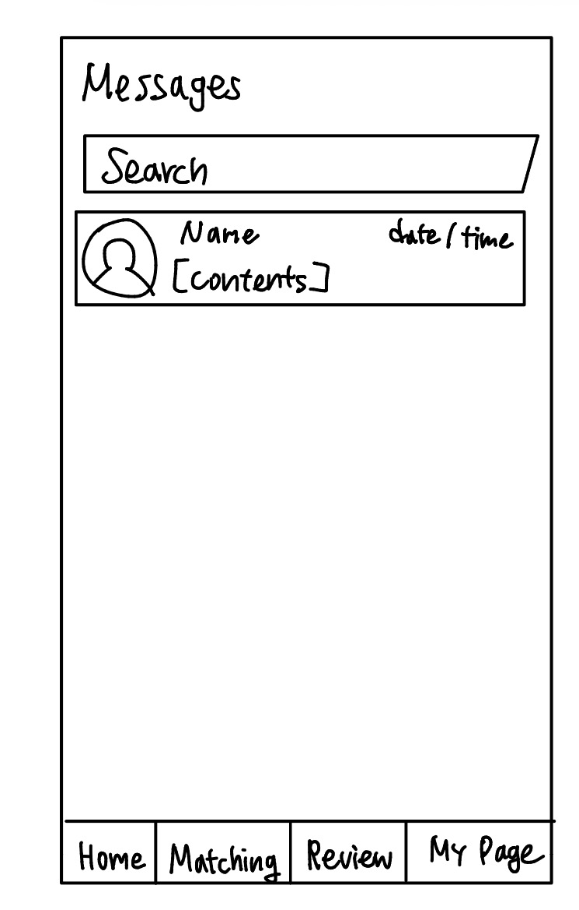
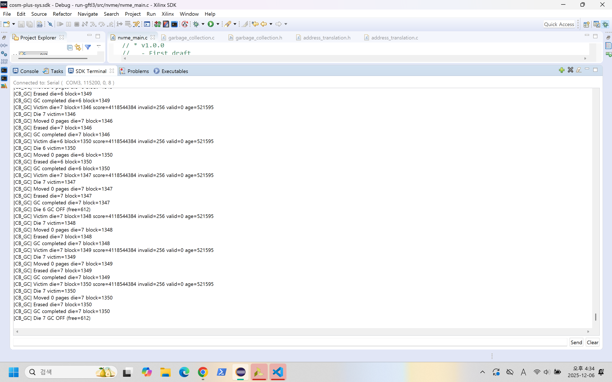
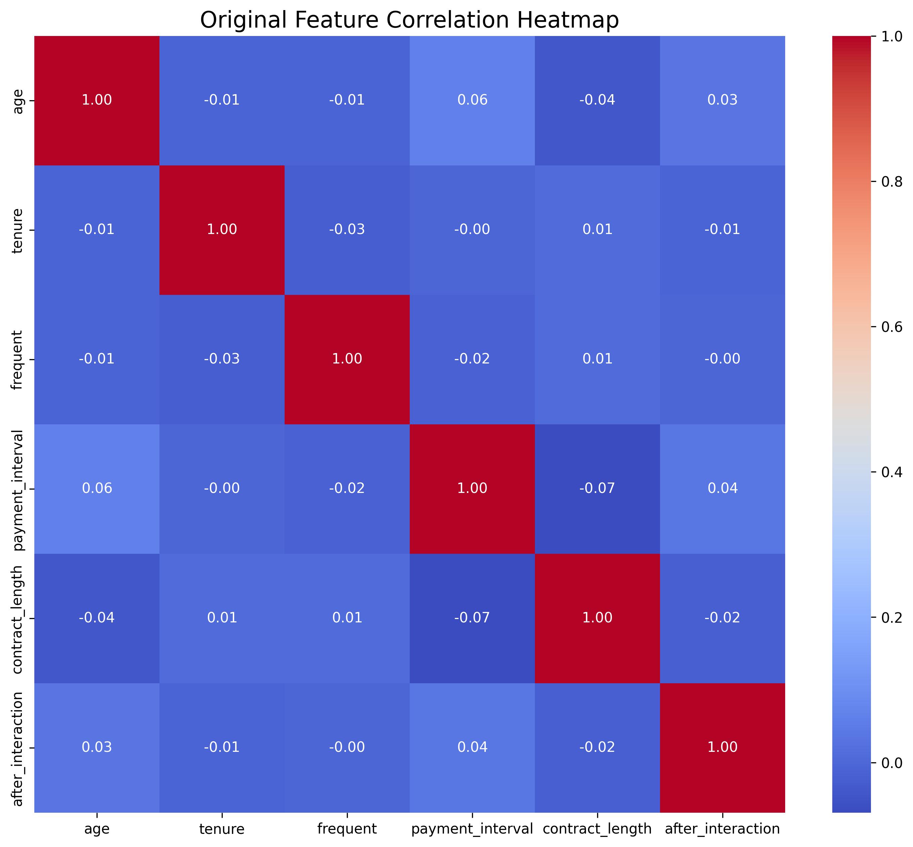
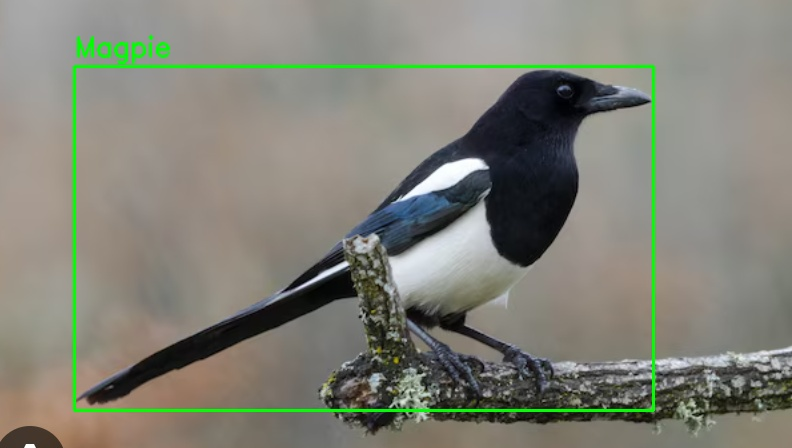
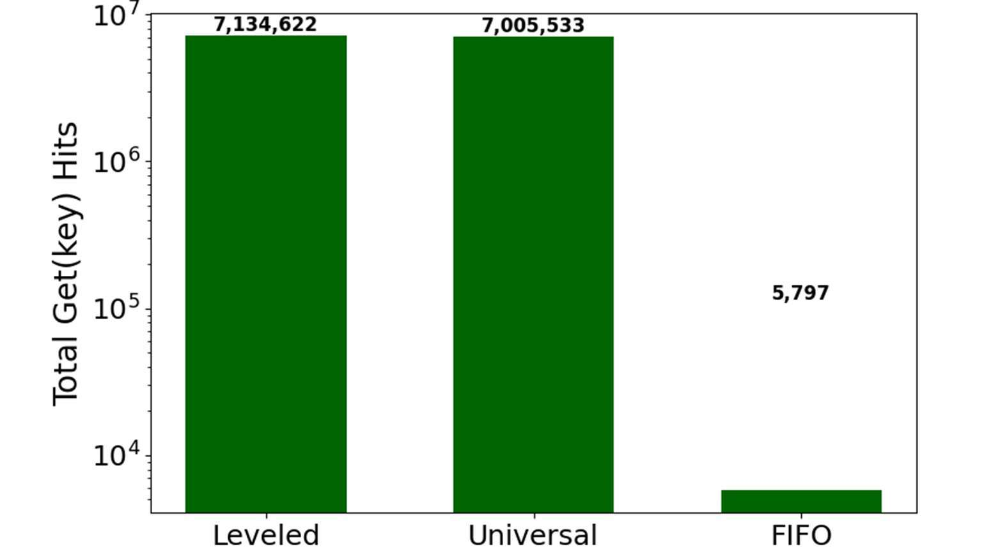

예매 서비스 화면 일부
단짠
요구사항 조율부터 예매·입장 연계와 운영 개선까지
학생의 축제 정보 탐색·예매와 운영자의 입장 확인·팔찌 배부를 연결한 대학 축제 웹앱입니다. 사용자 흐름과 협력사 데이터 전달 기준을 구체화하고, 서비스 구현·검증과 현장 운영에 참여했습니다.
팀 통합 부하 테스트에서 10,000 VU 기준 재고·발급 3,400장, 중복 발급 0건, 발급 순번 갭 0건을 확인했습니다.
프로젝트 읽기 박주희 · DX Engineer
사용자와 운영자의 요구를 조율하고, 서비스와 데이터의 흐름을 연결합니다.
AI를 활용한 구현부터 사용자 검증과 운영 문제 해결까지 경험했습니다.
요구사항 조율과 데이터 연계, AI 활용과 운영 검증.
서비스 개발·운영부터 시스템 연구까지, 판단과 실행의 근거를 담았습니다.
9개의 프로젝트
예매 서비스 화면 일부
요구사항 조율부터 예매·입장 연계와 운영 개선까지
학생의 축제 정보 탐색·예매와 운영자의 입장 확인·팔찌 배부를 연결한 대학 축제 웹앱입니다. 사용자 흐름과 협력사 데이터 전달 기준을 구체화하고, 서비스 구현·검증과 현장 운영에 참여했습니다.

응답·검증 흐름도
평가 기준을 응답 규칙으로 구체화한 의료 AI 개선
루닛의 의료 특화 모델 L2-preview를 활용해 건강 상담 응답을 개선하고 HealthBench 평가 하네스를 보완한 프로젝트입니다.

관측성 아키텍처
Kubernetes 기반 LLM 서비스 관측성 플랫폼
로컬 Kubernetes(kind) 환경에서 LLM/RAG 서비스의 검색·모델 호출·오류를 요청 단위로 연결한 관측성 MVP입니다. 지표와 trace, 알림을 함께 확인해 지연과 실패 원인을 추적합니다.

손그림 UI 입력 예시
손그림 입력에서 요구사항 명세와 화면 흐름을 생성하는 멀티모달 에이전트
손그림 UI·기능·텍스트 입력을 결합해 SRS 요구사항 명세서와 ASCII 화면 흐름을 생성하는 멀티모달 ReAct Agent 시스템입니다.

사용자 흐름도
봉사활동을 함께 하며 서로를 알아가는 소셜 네트워킹 서비스
봉사활동을 함께 하며 서로를 알아볼 수 있는 소셜 네트워킹 및 소개팅 서비스입니다.

Xilinx SDK 실험 화면
Xilinx · Cosmos+ 기반 FTL·GC 성능 실험
Xilinx·Cosmos+ 보드를 활용한 FTL 실험 프로젝트입니다. Greedy·Cost-Benefit GC 정책과 Incremental GC를 모방한 Pipeline 기반 GameGC 방식의 성능을 비교했습니다.

고객 특성 상관관계 분석
고객 데이터 기반 지원 필요 수준 분류
고객 데이터를 기반으로 지원 필요 수준을 분류하고 feature engineering과 모델 성능 비교를 수행한 프로젝트입니다.

조류 탐지 결과
조류 인식과 기피음 재생을 결합한 지능형 퇴치 시스템
농작물에 피해를 입히는 조류를 인식하고, 각 새가 싫어하는 소리를 자동 재생하는 지능형 퇴치 시스템입니다.

논문 실험 그래프
Compaction Style에 따른 저장 엔진 성능 변화 분석
RocksDB의 Leveled·Universal·FIFO Compaction Style에 따른 성능을 자동 측정·분석·시각화한 연구입니다.
스토리지 성능 분석과 텍스트 임베딩 연구,
그리고 운영체제 교재 기반 RAG 저서.
운영체제 교재 텍스트를 바탕으로 RAG 시스템을 구축하는 과정을 다룬 교육용 저서입니다.
운영체제 교재의 개념이 임베딩 공간에 어떻게 표현되는지 분석하고, 모델·인덱스 선택에 따른 RAG 응답 품질과 저장 비용을 비교했습니다.
같은 RocksDB에서도 Compaction 정책에 따라 쓰기 비용과 읽기 성능이 달라지는 이유를 실험하고, 워크로드에 따른 정책 선택의 근거를 제시했습니다.
해커톤에서의 실행과 연구의 성과.
의료 특화 모델의 건강 상담 응답 규칙과 HealthBench 평가 하네스 개선.
주최: 루닛 (후원: 과학기술정보통신부 · NIPA)
봉사활동 참여와 만남을 연결하는 소셜 매칭 서비스 개발.
주최: 단국대학교 SW중심사업단
OSTEP 교재의 임베딩 구조와 모델·검색 인덱스별 RAG 성능 비교.
주최: 한국정보과학회 정보보안 및 고신뢰컴퓨팅연구회
조류 인식 결과에 따라 기피음을 재생하는 농작물 보호 시스템 개발.
주최: 경희대학교 AI·SW 교육단 · 소프트웨어융합대학
시스템소프트웨어 연구와 학술 발표,
행사 운영·콘텐츠 기획 경험.
RAG와 저장장치 공동연구
RocksDB 성능 비교와 KCC 2025 논문 발표
DevelopmentJava · Spring Boot · React · TypeScript · Python · C / C++
AI & DataLLM / RAG · LangGraph · PyTorch · OpenCV · scikit-learn
Systems & OperationsRedis · Kafka · MySQL · Docker · Kubernetes · AWS · Linux · Git
자격증
한국산업인력공단 ·
어학
영어 ·
단국대학교 소프트웨어학과 4학년